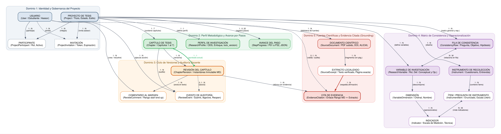
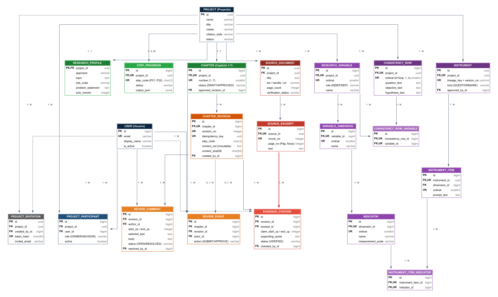
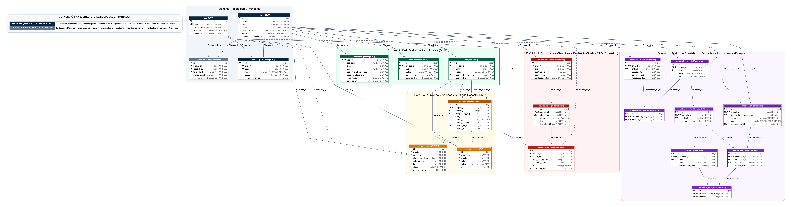

🏛️ Gobernanza y Avance
Gestiona la identidad del estudiante y asesor, asegurando que cada proyecto de tesis tenga un solo titular y avance secuencial a través de los 32 pasos estructurados de titulación.
📑 Inmutabilidad de Revisiones
Cada vez que el estudiante guarda un paso, se crea una revisión inmutable del texto entregado para ese paso. Las observaciones del asesor se anclan a esa revisión; la instantánea completa del capítulo aprobado está pendiente.
🔬 Grounding Científico
Las afirmaciones redactadas se vinculan a fragmentos específicos de artículos y tesis reales, garantizando que el 100% de las citas cuenten con localizador físico o DOI comprobado.


🔗 Resolución de Relaciones N:M
Uso de tablas asociativas explícitas con restricciones de unicidad compuesta:
project_participant: Vincula usuarios y proyectos con roles diferenciados.consistency_row_variable: Conecta variables con preguntas y objetivos.instrument_item_indicator: Mapea preguntas de encuesta con indicadores.
🛡️ Integridad de Dominio
Claves compuestas y restricciones lógicas que impiden mezclar datos entre proyectos ajenos o citar fuentes no pertenecientes al espacio del tesista.


🟢 Tablas MVP (Semana 12 - 9 Tablas)
Enfocadas en la demostración funcional del APF3:
user,project,project_participantresearch_profile(conlock_version)step_progress(JSONB P01–P32)chapter(1 al 7),chapter_revision(MD inmutable)review_comment,review_event(auditoría)
🟣 Tablas de Extensión (12 Tablas)
Complementan la plataforma para entrega final:
- Invitaciones con token criptográfico (
project_invitation). - Matriz metodológica y operacionalización (
consistency_row,research_variable,variable_dimension,indicator). - Diseño de instrumentos (
instrument,instrument_item). - Ingestión y verificación RAG (
source_document,source_excerpt,evidence_citation).
| Tabla Física | Fase | Dominio | Claves Principales | Propósito y Restricción de Integridad | DDL | |||||||||||||||||||||||||||||||||||||||||||||||||||||||||||||||||||||||||||||||||||||||||||||||||||
|---|---|---|---|---|---|---|---|---|---|---|---|---|---|---|---|---|---|---|---|---|---|---|---|---|---|---|---|---|---|---|---|---|---|---|---|---|---|---|---|---|---|---|---|---|---|---|---|---|---|---|---|---|---|---|---|---|---|---|---|---|---|---|---|---|---|---|---|---|---|---|---|---|---|---|---|---|---|---|---|---|---|---|---|---|---|---|---|---|---|---|---|---|---|---|---|---|---|---|---|---|---|---|---|---|
user |
MVP | Identidad | id BIGINT PKemail UK |
Almacena cuentas de tesistas y docentes. Unicidad funcional insensible a mayúsculas sobre lower(email). |
||||||||||||||||||||||||||||||||||||||||||||||||||||||||||||||||||||||||||||||||||||||||||||||||||||
|
Estructura de Columnas (5) Tabla: "user"
Restricciones e Índices
PostgreSQL DDL
CREATE TABLE IF NOT EXISTS "user" (
id BIGINT GENERATED BY DEFAULT AS IDENTITY PRIMARY KEY,
email VARCHAR(254) NOT NULL,
display_name VARCHAR(150) NOT NULL,
is_active BOOLEAN NOT NULL DEFAULT true,
created_at TIMESTAMPTZ NOT NULL DEFAULT CURRENT_TIMESTAMP,
CONSTRAINT uq_user_email UNIQUE (email),
CONSTRAINT chk_user_email_not_empty CHECK (length(trim(email)) > 3 AND position('@' in email) > 1)
);
CREATE UNIQUE INDEX IF NOT EXISTS user_lower_email_idx ON "user" (lower(email));
|
||||||||||||||||||||||||||||||||||||||||||||||||||||||||||||||||||||||||||||||||||||||||||||||||||||||||
project |
MVP | Identidad | id UUID PK |
Entidad raíz del proyecto de tesis. Controla el título académico, carrera, estilo de citación y estado del proyecto. | ||||||||||||||||||||||||||||||||||||||||||||||||||||||||||||||||||||||||||||||||||||||||||||||||||||
|
Estructura de Columnas (8) Tabla: "project"
Restricciones e Índices
PostgreSQL DDL
CREATE TABLE IF NOT EXISTS project (
id UUID PRIMARY KEY DEFAULT gen_random_uuid(),
name VARCHAR(160) NOT NULL,
title VARCHAR(300) NOT NULL,
career VARCHAR(160),
citation_style VARCHAR(20) NOT NULL DEFAULT 'IEEE',
status VARCHAR(12) NOT NULL DEFAULT 'ACTIVE',
created_at TIMESTAMPTZ NOT NULL DEFAULT CURRENT_TIMESTAMP,
updated_at TIMESTAMPTZ NOT NULL DEFAULT CURRENT_TIMESTAMP,
CONSTRAINT chk_project_status CHECK (status IN ('ACTIVE', 'ARCHIVED')),
CONSTRAINT chk_project_citation_style CHECK (citation_style IN ('IEEE', 'APA7'))
);
CREATE INDEX IF NOT EXISTS project_status_updated_idx ON project (status, updated_at DESC);
|
||||||||||||||||||||||||||||||||||||||||||||||||||||||||||||||||||||||||||||||||||||||||||||||||||||||||
project_participant |
MVP | Identidad | id BIGINT PK(project_id, user_id) UK |
Mapea roles (OWNER / ADVISOR). Filtros parciales limitan estrictamente a un tesista titular y un asesor activos simultáneos. | ||||||||||||||||||||||||||||||||||||||||||||||||||||||||||||||||||||||||||||||||||||||||||||||||||||
|
Estructura de Columnas (7) Tabla: "project_participant"
Restricciones e Índices Parciales
PostgreSQL DDL
CREATE TABLE IF NOT EXISTS project_participant (
id BIGINT GENERATED BY DEFAULT AS IDENTITY PRIMARY KEY,
project_id UUID NOT NULL,
user_id BIGINT NOT NULL,
role VARCHAR(10) NOT NULL,
active BOOLEAN NOT NULL DEFAULT true,
joined_at TIMESTAMPTZ NOT NULL DEFAULT CURRENT_TIMESTAMP,
left_at TIMESTAMPTZ,
CONSTRAINT fk_participant_project FOREIGN KEY (project_id) REFERENCES project(id) ON DELETE RESTRICT,
CONSTRAINT fk_participant_user FOREIGN KEY (user_id) REFERENCES "user"(id) ON DELETE RESTRICT,
CONSTRAINT uq_participant_project_user UNIQUE (project_id, user_id),
CONSTRAINT chk_participant_active CHECK (active = (left_at IS NULL)),
CONSTRAINT chk_participant_role CHECK (role IN ('OWNER', 'ADVISOR'))
);
CREATE UNIQUE INDEX IF NOT EXISTS uq_participant_project_owner_active ON project_participant(project_id) WHERE role = 'OWNER' AND active = true;
CREATE UNIQUE INDEX IF NOT EXISTS uq_participant_project_advisor_active ON project_participant(project_id) WHERE role = 'ADVISOR' AND active = true;
CREATE INDEX IF NOT EXISTS participant_user_active_role_idx ON project_participant(user_id, active, role);
CREATE INDEX IF NOT EXISTS participant_project_id_idx ON project_participant(project_id);
|
||||||||||||||||||||||||||||||||||||||||||||||||||||||||||||||||||||||||||||||||||||||||||||||||||||||||
project_invitation |
Extensión | Identidad | id UUID PKtoken_hash CHAR(64) UK |
Gestión segura de invitaciones para docentes con hash criptográfico y caducidad temporal. | ||||||||||||||||||||||||||||||||||||||||||||||||||||||||||||||||||||||||||||||||||||||||||||||||||||
|
Estructura de Columnas (10) Tabla: "project_invitation"
Restricciones e Índices
PostgreSQL DDL
CREATE TABLE IF NOT EXISTS project_invitation (
id UUID PRIMARY KEY DEFAULT gen_random_uuid(),
project_id UUID NOT NULL,
email VARCHAR(254) NOT NULL,
role VARCHAR(10) NOT NULL DEFAULT 'ADVISOR',
token_hash CHAR(64) NOT NULL,
invited_by_user_id BIGINT NOT NULL,
accepted_by_user_id BIGINT,
expires_at TIMESTAMPTZ NOT NULL,
created_at TIMESTAMPTZ NOT NULL DEFAULT CURRENT_TIMESTAMP,
accepted_at TIMESTAMPTZ,
CONSTRAINT fk_invitation_project FOREIGN KEY (project_id) REFERENCES project(id) ON DELETE CASCADE,
CONSTRAINT fk_invitation_invited_by FOREIGN KEY (invited_by_user_id) REFERENCES "user"(id) ON DELETE RESTRICT,
CONSTRAINT fk_invitation_accepted_by FOREIGN KEY (accepted_by_user_id) REFERENCES "user"(id) ON DELETE RESTRICT,
CONSTRAINT uq_invitation_token_hash UNIQUE (token_hash),
CONSTRAINT chk_invitation_role CHECK (role = 'ADVISOR'),
CONSTRAINT chk_invitation_acceptance CHECK (accepted_at IS NULL OR accepted_by_user_id IS NOT NULL)
);
CREATE UNIQUE INDEX IF NOT EXISTS uq_invitation_pending_project_email ON project_invitation(project_id, lower(email)) WHERE accepted_at IS NULL;
CREATE INDEX IF NOT EXISTS invitation_token_hash_idx ON project_invitation(token_hash);
CREATE INDEX IF NOT EXISTS invitation_project_id_idx ON project_invitation(project_id);
|
||||||||||||||||||||||||||||||||||||||||||||||||||||||||||||||||||||||||||||||||||||||||||||||||||||||||
research_profile |
MVP | Metodología | project_id UUID PK,FK |
Perfil metodológico 1:1 con el proyecto. Contiene enfoque y lock_version para concurrencia optimista al guardar. | ||||||||||||||||||||||||||||||||||||||||||||||||||||||||||||||||||||||||||||||||||||||||||||||||||||
|
Estructura de Columnas (10) Tabla: "research_profile"
Restricciones e Índices
PostgreSQL DDL
CREATE TABLE IF NOT EXISTS research_profile (
project_id UUID PRIMARY KEY,
academic_period VARCHAR(20),
approach VARCHAR(20) NOT NULL DEFAULT 'QUANTITATIVE',
general_problem TEXT,
general_objective TEXT,
general_hypothesis TEXT,
justification TEXT,
theoretical_framework_summary TEXT,
lock_version INTEGER NOT NULL DEFAULT 0,
updated_at TIMESTAMPTZ NOT NULL DEFAULT CURRENT_TIMESTAMP,
CONSTRAINT fk_research_profile_project FOREIGN KEY (project_id) REFERENCES project(id) ON DELETE CASCADE,
CONSTRAINT chk_research_profile_approach CHECK (approach IN ('QUANTITATIVE', 'QUALITATIVE', 'MIXED'))
);
|
||||||||||||||||||||||||||||||||||||||||||||||||||||||||||||||||||||||||||||||||||||||||||||||||||||||||
step_progress |
MVP | Metodología | id BIGINT PK(project_id, step_code) UK |
Registra el avance (NOT_STARTED, IN_PROGRESS, COMPLETED) y la salida JSONB de cada uno de los 32 pasos metodológicos (P01–P32). | ||||||||||||||||||||||||||||||||||||||||||||||||||||||||||||||||||||||||||||||||||||||||||||||||||||
|
Estructura de Columnas (8) Tabla: "step_progress"
Restricciones e Índices
PostgreSQL DDL
CREATE TABLE IF NOT EXISTS step_progress (
id BIGINT GENERATED BY DEFAULT AS IDENTITY PRIMARY KEY,
project_id UUID NOT NULL,
step_code VARCHAR(8) NOT NULL,
status VARCHAR(15) NOT NULL DEFAULT 'NOT_STARTED',
output_payload JSONB NOT NULL DEFAULT '{}'::jsonb,
started_at TIMESTAMPTZ,
completed_at TIMESTAMPTZ,
updated_at TIMESTAMPTZ NOT NULL DEFAULT CURRENT_TIMESTAMP,
CONSTRAINT fk_step_progress_project FOREIGN KEY (project_id) REFERENCES project(id) ON DELETE CASCADE,
CONSTRAINT uq_step_progress_project_code UNIQUE (project_id, step_code),
CONSTRAINT chk_step_progress_status CHECK (status IN ('NOT_STARTED', 'IN_PROGRESS', 'COMPLETED')),
CONSTRAINT chk_step_progress_code CHECK (step_code ~ '^P(0[1-9]|[12][0-9]|3[0-2])$')
);
CREATE INDEX IF NOT EXISTS step_progress_project_status_idx ON step_progress (project_id, status);
CREATE INDEX IF NOT EXISTS step_progress_project_code_idx ON step_progress (project_id, step_code);
|
||||||||||||||||||||||||||||||||||||||||||||||||||||||||||||||||||||||||||||||||||||||||||||||||||||||||
chapter |
MVP | Metodología | id BIGINT PK(project_id, number) UK |
Estructura exacta de los Capítulos 1 al 7. Mantiene estado de aprobación y referencia a approved_revision_id. | ||||||||||||||||||||||||||||||||||||||||||||||||||||||||||||||||||||||||||||||||||||||||||||||||||||
|
Estructura de Columnas (7) Tabla: "chapter"
Restricciones e Índices
PostgreSQL DDL
-- Creado inicialmente sin approved_revision_id FK para romper ciclo circular
CREATE TABLE IF NOT EXISTS chapter (
id BIGINT GENERATED BY DEFAULT AS IDENTITY PRIMARY KEY,
project_id UUID NOT NULL,
number SMALLINT NOT NULL,
title VARCHAR(160) NOT NULL,
status VARCHAR(20) NOT NULL DEFAULT 'DRAFT',
approved_revision_id BIGINT,
updated_at TIMESTAMPTZ NOT NULL DEFAULT CURRENT_TIMESTAMP,
CONSTRAINT fk_chapter_project FOREIGN KEY (project_id) REFERENCES project(id) ON DELETE CASCADE,
CONSTRAINT uq_chapter_project_number UNIQUE (project_id, number),
CONSTRAINT chk_chapter_number CHECK (number BETWEEN 1 AND 7),
CONSTRAINT chk_chapter_status CHECK (status IN ('DRAFT', 'IN_REVIEW', 'APPROVED', 'REJECTED'))
);
CREATE INDEX IF NOT EXISTS chapter_project_status_idx ON chapter (project_id, status);
CREATE INDEX IF NOT EXISTS chapter_project_number_idx ON chapter (project_id, number);
|
||||||||||||||||||||||||||||||||||||||||||||||||||||||||||||||||||||||||||||||||||||||||||||||||||||||||
chapter_revision |
MVP | Revisiones | id BIGINT PK(chapter_id, revision_no) UK |
Instantánea inmutable del capítulo en Markdown. Incluye content_sha256 e idempotency_key contra reintentos. | ||||||||||||||||||||||||||||||||||||||||||||||||||||||||||||||||||||||||||||||||||||||||||||||||||||
|
Estructura de Columnas (9) Tabla: "chapter_revision"
Restricciones e Índices
PostgreSQL DDL + Ciclo FK
CREATE TABLE IF NOT EXISTS chapter_revision (
id BIGINT GENERATED BY DEFAULT AS IDENTITY PRIMARY KEY,
chapter_id BIGINT NOT NULL,
revision_no INTEGER NOT NULL,
author_user_id BIGINT NOT NULL,
content_md TEXT NOT NULL,
content_sha256 CHAR(64) NOT NULL,
word_count INTEGER NOT NULL DEFAULT 0,
created_at TIMESTAMPTZ NOT NULL DEFAULT CURRENT_TIMESTAMP,
idempotency_key VARCHAR(64),
CONSTRAINT fk_revision_chapter FOREIGN KEY (chapter_id) REFERENCES chapter(id) ON DELETE CASCADE,
CONSTRAINT fk_revision_author FOREIGN KEY (author_user_id) REFERENCES "user"(id) ON DELETE RESTRICT,
CONSTRAINT uq_chapter_revision_no UNIQUE (chapter_id, revision_no),
CONSTRAINT chk_revision_no_positive CHECK (revision_no >= 1),
CONSTRAINT chk_revision_word_count CHECK (word_count >= 0)
);
CREATE UNIQUE INDEX IF NOT EXISTS uq_revision_chapter_idempotency ON chapter_revision(chapter_id, idempotency_key) WHERE idempotency_key IS NOT NULL;
CREATE INDEX IF NOT EXISTS chapter_revision_chapter_created_idx ON chapter_revision(chapter_id, created_at DESC);
-- Resolución de ciclo circular con chapter:
ALTER TABLE chapter ADD CONSTRAINT fk_chapter_approved_rev FOREIGN KEY (approved_revision_id) REFERENCES chapter_revision(id) ON DELETE SET NULL;
|
||||||||||||||||||||||||||||||||||||||||||||||||||||||||||||||||||||||||||||||||||||||||||||||||||||||||
review_comment |
MVP | Revisiones | id BIGINT PKrevision_id FK |
Observaciones docentes ancladas a posiciones de caracteres (start_cp, end_cp) sobre la revisión inmutable. | ||||||||||||||||||||||||||||||||||||||||||||||||||||||||||||||||||||||||||||||||||||||||||||||||||||
|
Estructura de Columnas (10) Tabla: "review_comment"
Restricciones e Índices
PostgreSQL DDL
CREATE TABLE IF NOT EXISTS review_comment (
id BIGINT GENERATED BY DEFAULT AS IDENTITY PRIMARY KEY,
revision_id BIGINT NOT NULL,
user_id BIGINT NOT NULL,
start_cp INTEGER,
end_cp INTEGER,
kind VARCHAR(15) NOT NULL DEFAULT 'OBSERVATION',
body TEXT NOT NULL,
resolved BOOLEAN NOT NULL DEFAULT false,
created_at TIMESTAMPTZ NOT NULL DEFAULT CURRENT_TIMESTAMP,
resolved_at TIMESTAMPTZ,
CONSTRAINT fk_comment_revision FOREIGN KEY (revision_id) REFERENCES chapter_revision(id) ON DELETE CASCADE,
CONSTRAINT fk_comment_user FOREIGN KEY (user_id) REFERENCES "user"(id) ON DELETE RESTRICT,
CONSTRAINT chk_comment_kind CHECK (kind IN ('OBSERVATION', 'APPROVAL', 'REJECTION')),
CONSTRAINT chk_comment_range CHECK (start_cp IS NULL OR (start_cp >= 0 AND end_cp IS NOT NULL AND end_cp >= start_cp))
);
CREATE INDEX IF NOT EXISTS review_comment_revision_resolved_idx ON review_comment (revision_id, resolved);
CREATE INDEX IF NOT EXISTS review_comment_user_id_idx ON review_comment (user_id);
|
||||||||||||||||||||||||||||||||||||||||||||||||||||||||||||||||||||||||||||||||||||||||||||||||||||||||
review_event |
MVP | Revisiones | id BIGINT PKchapter_id FK |
Libro de auditoría append-only para transiciones: SUBMIT, REQUEST_CHANGES, APPROVE y REOPEN (con motivo obligatorio). | ||||||||||||||||||||||||||||||||||||||||||||||||||||||||||||||||||||||||||||||||||||||||||||||||||||
|
Estructura de Columnas (7) Tabla: "review_event"
Restricciones e Índices
PostgreSQL DDL
CREATE TABLE IF NOT EXISTS review_event (
id BIGINT GENERATED BY DEFAULT AS IDENTITY PRIMARY KEY,
chapter_id BIGINT NOT NULL,
revision_id BIGINT,
actor_user_id BIGINT NOT NULL,
action VARCHAR(20) NOT NULL,
notes TEXT,
created_at TIMESTAMPTZ NOT NULL DEFAULT CURRENT_TIMESTAMP,
CONSTRAINT fk_event_chapter FOREIGN KEY (chapter_id) REFERENCES chapter(id) ON DELETE CASCADE,
CONSTRAINT fk_event_revision FOREIGN KEY (revision_id) REFERENCES chapter_revision(id) ON DELETE SET NULL,
CONSTRAINT fk_event_actor FOREIGN KEY (actor_user_id) REFERENCES "user"(id) ON DELETE RESTRICT,
CONSTRAINT chk_review_event_action CHECK (action IN ('SUBMIT', 'REQUEST_CHANGES', 'APPROVE', 'REOPEN')),
CONSTRAINT chk_reopen_notes CHECK (action <> 'REOPEN' OR (notes IS NOT NULL AND length(trim(notes)) >= 10))
);
CREATE INDEX IF NOT EXISTS review_event_chapter_created_idx ON review_event (chapter_id, created_at DESC);
CREATE INDEX IF NOT EXISTS review_event_actor_idx ON review_event (actor_user_id);
|
||||||||||||||||||||||||||||||||||||||||||||||||||||||||||||||||||||||||||||||||||||||||||||||||||||||||
consistency_row |
Extensión | Variables | id BIGINT PK(project_id, ordinal) UK |
Filas de la matriz de consistencia (ordinal 0 general, 1..n específicas). Alinea preguntas, objetivos e hipótesis. | ||||||||||||||||||||||||||||||||||||||||||||||||||||||||||||||||||||||||||||||||||||||||||||||||||||
|
Estructura de Columnas (7) Tabla: "consistency_row"
Restricciones e Índices
PostgreSQL DDL
CREATE TABLE IF NOT EXISTS consistency_row (
id BIGINT GENERATED BY DEFAULT AS IDENTITY PRIMARY KEY,
project_id UUID NOT NULL,
ordinal SMALLINT NOT NULL DEFAULT 0,
question TEXT NOT NULL,
objective TEXT NOT NULL,
hypothesis TEXT,
updated_at TIMESTAMPTZ NOT NULL DEFAULT CURRENT_TIMESTAMP,
CONSTRAINT fk_consistency_row_project FOREIGN KEY (project_id) REFERENCES project(id) ON DELETE CASCADE,
CONSTRAINT uq_consistency_row_project_ordinal UNIQUE (project_id, ordinal),
CONSTRAINT chk_consistency_row_ordinal CHECK (ordinal >= 0),
CONSTRAINT chk_consistency_row_question_not_empty CHECK (length(trim(question)) > 5),
CONSTRAINT chk_consistency_row_objective_not_empty CHECK (length(trim(objective)) > 5)
);
CREATE INDEX IF NOT EXISTS consistency_row_project_idx ON consistency_row (project_id, ordinal);
|
||||||||||||||||||||||||||||||||||||||||||||||||||||||||||||||||||||||||||||||||||||||||||||||||||||||||
research_variable |
Extensión | Variables | id BIGINT PK(project_id, ordinal) UK |
Variables con rol metodológico (INDEPENDENT, DEPENDENT, OTHER) y definiciones conceptuales. | ||||||||||||||||||||||||||||||||||||||||||||||||||||||||||||||||||||||||||||||||||||||||||||||||||||
|
Estructura de Columnas (8) Tabla: "research_variable"
Restricciones e Índices
PostgreSQL DDL
CREATE TABLE IF NOT EXISTS research_variable (
id BIGINT GENERATED BY DEFAULT AS IDENTITY PRIMARY KEY,
project_id UUID NOT NULL,
ordinal SMALLINT NOT NULL,
name VARCHAR(160) NOT NULL,
role VARCHAR(15) NOT NULL DEFAULT 'OTHER',
conceptual_definition TEXT,
operational_definition TEXT,
updated_at TIMESTAMPTZ NOT NULL DEFAULT CURRENT_TIMESTAMP,
CONSTRAINT fk_research_variable_project FOREIGN KEY (project_id) REFERENCES project(id) ON DELETE CASCADE,
CONSTRAINT uq_research_variable_project_ordinal UNIQUE (project_id, ordinal),
CONSTRAINT chk_research_variable_ordinal CHECK (ordinal >= 1),
CONSTRAINT chk_research_variable_role CHECK (role IN ('INDEPENDENT', 'DEPENDENT', 'INTERVENING', 'MODERATING', 'OTHER'))
);
CREATE INDEX IF NOT EXISTS research_variable_project_idx ON research_variable (project_id, ordinal);
|
||||||||||||||||||||||||||||||||||||||||||||||||||||||||||||||||||||||||||||||||||||||||||||||||||||||||
consistency_row_variable |
Extensión | Variables | id BIGINT PK(row_id, var_id) UK |
Tabla asociativa que vincula qué variables participan en cada pregunta u objetivo de la matriz de consistencia. | ||||||||||||||||||||||||||||||||||||||||||||||||||||||||||||||||||||||||||||||||||||||||||||||||||||
|
Estructura de Columnas (4) Tabla: "consistency_row_variable"
Restricciones e Índices
PostgreSQL DDL
CREATE TABLE IF NOT EXISTS consistency_row_variable (
id BIGINT GENERATED BY DEFAULT AS IDENTITY PRIMARY KEY,
row_id BIGINT NOT NULL,
variable_id BIGINT NOT NULL,
role_in_row VARCHAR(20) NOT NULL DEFAULT 'PRIMARY',
CONSTRAINT fk_crv_row FOREIGN KEY (row_id) REFERENCES consistency_row(id) ON DELETE CASCADE,
CONSTRAINT fk_crv_variable FOREIGN KEY (variable_id) REFERENCES research_variable(id) ON DELETE RESTRICT,
CONSTRAINT uq_crv_row_variable UNIQUE (row_id, variable_id),
CONSTRAINT chk_crv_role_in_row CHECK (role_in_row IN ('PRIMARY', 'SECONDARY'))
);
CREATE INDEX IF NOT EXISTS crv_row_id_idx ON consistency_row_variable (row_id);
CREATE INDEX IF NOT EXISTS crv_variable_id_idx ON consistency_row_variable (variable_id);
|
||||||||||||||||||||||||||||||||||||||||||||||||||||||||||||||||||||||||||||||||||||||||||||||||||||||||
variable_dimension |
Extensión | Variables | id BIGINT PK(variable_id, ordinal) UK |
Descomposición de variables en dimensiones teóricas. | ||||||||||||||||||||||||||||||||||||||||||||||||||||||||||||||||||||||||||||||||||||||||||||||||||||
|
Estructura de Columnas (6) Tabla: "variable_dimension"
Restricciones e Índices
PostgreSQL DDL
CREATE TABLE IF NOT EXISTS variable_dimension (
id BIGINT GENERATED BY DEFAULT AS IDENTITY PRIMARY KEY,
variable_id BIGINT NOT NULL,
ordinal SMALLINT NOT NULL,
name VARCHAR(160) NOT NULL,
description TEXT,
updated_at TIMESTAMPTZ NOT NULL DEFAULT CURRENT_TIMESTAMP,
CONSTRAINT fk_dimension_variable FOREIGN KEY (variable_id) REFERENCES research_variable(id) ON DELETE CASCADE,
CONSTRAINT uq_variable_dimension_ordinal UNIQUE (variable_id, ordinal),
CONSTRAINT chk_dimension_ordinal CHECK (ordinal >= 1)
);
CREATE INDEX IF NOT EXISTS variable_dimension_variable_idx ON variable_dimension (variable_id, ordinal);
|
||||||||||||||||||||||||||||||||||||||||||||||||||||||||||||||||||||||||||||||||||||||||||||||||||||||||
indicator |
Extensión | Variables | id BIGINT PK(dimension_id, ordinal) UK |
Indicadores medibles con escala de medición (ordinal, nominal, intervalo, razón) y regla operacional. | ||||||||||||||||||||||||||||||||||||||||||||||||||||||||||||||||||||||||||||||||||||||||||||||||||||
|
Estructura de Columnas (7) Tabla: "indicator"
Restricciones e Índices
PostgreSQL DDL
CREATE TABLE IF NOT EXISTS indicator (
id BIGINT GENERATED BY DEFAULT AS IDENTITY PRIMARY KEY,
dimension_id BIGINT NOT NULL,
ordinal SMALLINT NOT NULL,
name VARCHAR(200) NOT NULL,
measurement_scale VARCHAR(20) NOT NULL,
operational_rule TEXT,
updated_at TIMESTAMPTZ NOT NULL DEFAULT CURRENT_TIMESTAMP,
CONSTRAINT fk_indicator_dimension FOREIGN KEY (dimension_id) REFERENCES variable_dimension(id) ON DELETE CASCADE,
CONSTRAINT uq_indicator_dimension_ordinal UNIQUE (dimension_id, ordinal),
CONSTRAINT chk_indicator_ordinal CHECK (ordinal >= 1),
CONSTRAINT chk_indicator_scale CHECK (measurement_scale IN ('NOMINAL', 'ORDINAL', 'INTERVAL', 'RATIO'))
);
CREATE INDEX IF NOT EXISTS indicator_dimension_idx ON indicator (dimension_id, ordinal);
|
||||||||||||||||||||||||||||||||||||||||||||||||||||||||||||||||||||||||||||||||||||||||||||||||||||||||
instrument |
Extensión | Variables | id UUID PK(project, lineage, version) UK |
Diseño de cuestionarios y entrevistas. Soporta control de versiones formal ante pruebas piloto. | ||||||||||||||||||||||||||||||||||||||||||||||||||||||||||||||||||||||||||||||||||||||||||||||||||||
|
Estructura de Columnas (10) Tabla: "instrument"
Restricciones e Índices
PostgreSQL DDL
CREATE TABLE IF NOT EXISTS instrument (
id UUID PRIMARY KEY DEFAULT gen_random_uuid(),
project_id UUID NOT NULL,
lineage_id UUID NOT NULL,
version SMALLINT NOT NULL DEFAULT 1,
name VARCHAR(200) NOT NULL,
kind VARCHAR(20) NOT NULL,
reliability_method VARCHAR(50),
reliability_score NUMERIC(5,4),
is_locked BOOLEAN NOT NULL DEFAULT false,
created_at TIMESTAMPTZ NOT NULL DEFAULT CURRENT_TIMESTAMP,
CONSTRAINT fk_instrument_project FOREIGN KEY (project_id) REFERENCES project(id) ON DELETE CASCADE,
CONSTRAINT uq_instrument_lineage_version UNIQUE (project_id, lineage_id, version),
CONSTRAINT chk_instrument_version CHECK (version >= 1),
CONSTRAINT chk_instrument_kind CHECK (kind IN ('QUESTIONNAIRE', 'INTERVIEW_GUIDE', 'OBSERVATION_SHEET', 'CHECKLIST', 'OTHER')),
CONSTRAINT chk_instrument_reliability_score CHECK (reliability_score IS NULL OR (reliability_score >= 0.0000 AND reliability_score <= 1.0000))
);
CREATE INDEX IF NOT EXISTS instrument_project_lineage_idx ON instrument (project_id, lineage_id);
CREATE INDEX IF NOT EXISTS instrument_project_kind_idx ON instrument (project_id, kind);
|
||||||||||||||||||||||||||||||||||||||||||||||||||||||||||||||||||||||||||||||||||||||||||||||||||||||||
instrument_item |
Extensión | Variables | id BIGINT PK(instrument_id, ordinal) UK |
Preguntas individuales del instrumento con escala de respuesta (ej. Likert 5 puntos). | ||||||||||||||||||||||||||||||||||||||||||||||||||||||||||||||||||||||||||||||||||||||||||||||||||||
|
Estructura de Columnas (7) Tabla: "instrument_item"
Restricciones e Índices
PostgreSQL DDL
CREATE TABLE IF NOT EXISTS instrument_item (
id BIGINT GENERATED BY DEFAULT AS IDENTITY PRIMARY KEY,
instrument_id UUID NOT NULL,
ordinal SMALLINT NOT NULL,
prompt TEXT NOT NULL,
response_type VARCHAR(20) NOT NULL,
is_mandatory BOOLEAN NOT NULL DEFAULT true,
options_json JSONB NOT NULL DEFAULT '[]'::jsonb,
CONSTRAINT fk_item_instrument FOREIGN KEY (instrument_id) REFERENCES instrument(id) ON DELETE CASCADE,
CONSTRAINT uq_instrument_item_ordinal UNIQUE (instrument_id, ordinal),
CONSTRAINT chk_instrument_item_ordinal CHECK (ordinal >= 1),
CONSTRAINT chk_instrument_item_response_type CHECK (response_type IN ('LIKERT_5', 'LIKERT_7', 'DICHOTOMOUS', 'OPEN', 'NUMERIC'))
);
CREATE INDEX IF NOT EXISTS instrument_item_instrument_idx ON instrument_item (instrument_id, ordinal);
|
||||||||||||||||||||||||||||||||||||||||||||||||||||||||||||||||||||||||||||||||||||||||||||||||||||||||
instrument_item_indicator |
Extensión | Variables | id BIGINT PK(item_id, indicator_id) UK |
Mapeo de operacionalización: garantiza que cada pregunta de campo mida exactamente un indicador del marco teórico. | ||||||||||||||||||||||||||||||||||||||||||||||||||||||||||||||||||||||||||||||||||||||||||||||||||||
|
Estructura de Columnas (3) Tabla: "instrument_item_indicator"
Restricciones e Índices
PostgreSQL DDL
CREATE TABLE IF NOT EXISTS instrument_item_indicator (
id BIGINT GENERATED BY DEFAULT AS IDENTITY PRIMARY KEY,
item_id BIGINT NOT NULL,
indicator_id BIGINT NOT NULL,
CONSTRAINT fk_iii_item FOREIGN KEY (item_id) REFERENCES instrument_item(id) ON DELETE CASCADE,
CONSTRAINT fk_iii_indicator FOREIGN KEY (indicator_id) REFERENCES indicator(id) ON DELETE RESTRICT,
CONSTRAINT uq_item_indicator UNIQUE (item_id, indicator_id)
);
CREATE INDEX IF NOT EXISTS iii_item_id_idx ON instrument_item_indicator (item_id);
CREATE INDEX IF NOT EXISTS iii_indicator_id_idx ON instrument_item_indicator (indicator_id);
|
||||||||||||||||||||||||||||||||||||||||||||||||||||||||||||||||||||||||||||||||||||||||||||||||||||||||
source_document |
Extensión | Fuentes | id UUID PK |
Biblioteca de fuentes académicas (PDFs con número de páginas verificado físicamente y DOI/Handle comprobado). | ||||||||||||||||||||||||||||||||||||||||||||||||||||||||||||||||||||||||||||||||||||||||||||||||||||
|
Estructura de Columnas (13) Tabla: "source_document"
Restricciones e Índices
PostgreSQL DDL
CREATE TABLE IF NOT EXISTS source_document (
id UUID PRIMARY KEY DEFAULT gen_random_uuid(),
project_id UUID NOT NULL,
title VARCHAR(300) NOT NULL,
authors VARCHAR(300) NOT NULL,
publication_year SMALLINT NOT NULL,
source_type VARCHAR(20) NOT NULL,
doi VARCHAR(100),
handle VARCHAR(120),
local_path VARCHAR(500),
sha256_hash CHAR(64) NOT NULL,
total_physical_pages INTEGER NOT NULL,
is_open_access BOOLEAN NOT NULL DEFAULT false,
created_at TIMESTAMPTZ NOT NULL DEFAULT CURRENT_TIMESTAMP,
CONSTRAINT fk_source_project FOREIGN KEY (project_id) REFERENCES project(id) ON DELETE CASCADE,
CONSTRAINT uq_source_document_project_hash UNIQUE (project_id, sha256_hash),
CONSTRAINT chk_source_year CHECK (publication_year BETWEEN 1900 AND 2100),
CONSTRAINT chk_source_type CHECK (source_type IN ('JOURNAL_ARTICLE', 'THESIS_LIC', 'THESIS_MASTER', 'THESIS_DOCTORAL', 'BOOK', 'CONFERENCE', 'REPORT')),
CONSTRAINT chk_source_pages CHECK (total_physical_pages > 0)
);
CREATE UNIQUE INDEX IF NOT EXISTS uq_source_document_project_doi ON source_document(project_id, lower(doi)) WHERE doi IS NOT NULL;
CREATE INDEX IF NOT EXISTS source_document_project_idx ON source_document (project_id);
CREATE INDEX IF NOT EXISTS source_document_sha256_idx ON source_document (sha256_hash);
|
||||||||||||||||||||||||||||||||||||||||||||||||||||||||||||||||||||||||||||||||||||||||||||||||||||||||
source_excerpt |
Extensión | Fuentes | id BIGINT PK(source_id, chunk_no) UK |
Fragmentos de texto reales extraídos del documento con indicación obligatoria del número de página física del PDF. | ||||||||||||||||||||||||||||||||||||||||||||||||||||||||||||||||||||||||||||||||||||||||||||||||||||
|
Estructura de Columnas (7) Tabla: "source_excerpt"
Restricciones e Índices
PostgreSQL DDL
CREATE TABLE IF NOT EXISTS source_excerpt (
id BIGINT GENERATED BY DEFAULT AS IDENTITY PRIMARY KEY,
source_id UUID NOT NULL,
chunk_no INTEGER NOT NULL,
physical_page INTEGER NOT NULL,
text_content TEXT NOT NULL,
embedding_vector BYTEA,
created_at TIMESTAMPTZ NOT NULL DEFAULT CURRENT_TIMESTAMP,
CONSTRAINT fk_excerpt_source FOREIGN KEY (source_id) REFERENCES source_document(id) ON DELETE CASCADE,
CONSTRAINT uq_source_excerpt_chunk UNIQUE (source_id, chunk_no),
CONSTRAINT chk_excerpt_chunk_no CHECK (chunk_no >= 1),
CONSTRAINT chk_excerpt_page CHECK (physical_page >= 1),
CONSTRAINT chk_excerpt_text_length CHECK (length(trim(text_content)) >= 20)
);
CREATE INDEX IF NOT EXISTS source_excerpt_source_page_idx ON source_excerpt (source_id, physical_page);
CREATE INDEX IF NOT EXISTS source_excerpt_source_id_idx ON source_excerpt (source_id);
|
||||||||||||||||||||||||||||||||||||||||||||||||||||||||||||||||||||||||||||||||||||||||||||||||||||||||
evidence_citation |
Extensión | Fuentes | id BIGINT PKrevision_id FK, excerpt_id FK |
Vínculo de Grounding: enlaza la afirmación de la tesis con el extracto del PDF para erradicar alucinaciones bibliográficas. | ||||||||||||||||||||||||||||||||||||||||||||||||||||||||||||||||||||||||||||||||||||||||||||||||||||
|
Estructura de Columnas (7) Tabla: "evidence_citation"
Restricciones e Índices
PostgreSQL DDL
CREATE TABLE IF NOT EXISTS evidence_citation (
id BIGINT GENERATED BY DEFAULT AS IDENTITY PRIMARY KEY,
revision_id BIGINT NOT NULL,
excerpt_id BIGINT NOT NULL,
claim_text TEXT NOT NULL,
verification_status VARCHAR(20) NOT NULL DEFAULT 'GROUNDED',
similarity_score NUMERIC(4,3),
created_at TIMESTAMPTZ NOT NULL DEFAULT CURRENT_TIMESTAMP,
CONSTRAINT fk_citation_revision FOREIGN KEY (revision_id) REFERENCES chapter_revision(id) ON DELETE CASCADE,
CONSTRAINT fk_citation_excerpt FOREIGN KEY (excerpt_id) REFERENCES source_excerpt(id) ON DELETE RESTRICT,
CONSTRAINT chk_evidence_verification_status CHECK (verification_status IN ('GROUNDED', 'UNVERIFIED', 'CONTRADICTED')),
CONSTRAINT chk_evidence_similarity_score CHECK (similarity_score IS NULL OR (similarity_score >= 0.000 AND similarity_score <= 1.000))
);
CREATE INDEX IF NOT EXISTS evidence_citation_revision_status_idx ON evidence_citation (revision_id, verification_status);
CREATE INDEX IF NOT EXISTS evidence_citation_excerpt_idx ON evidence_citation (excerpt_id);
|
||||||||||||||||||||||||||||||||||||||||||||||||||||||||||||||||||||||||||||||||||||||||||||||||||||||||
🚀 Secuencia de Migración y Fases Arquitectónicas (5 Fases)
El despliegue de las 21 tablas sigue un orden estricto de resolución de claves foráneas y dependencias. Se destaca la resolución del ciclo de dependencia circular entre chapter y chapter_revision.
La tabla
chapter requiere una clave foránea a approved_revision_id que apunta a chapter_revision(id), pero a su vez chapter_revision posee la clave foránea obligatoria chapter_id que apunta a chapter(id).Estrategia de Migración:
- En Fase 2, se ejecuta
CREATE TABLE chapterdefiniendo la columnaapproved_revision_id BIGINT NULLsin restricción de clave foránea. - En Fase 3, se ejecuta
CREATE TABLE chapter_revisioncon su clave foráneaREFERENCES chapter(id) ON DELETE CASCADE. - Inmediatamente después, se aplica la migración correctiva:
ALTER TABLE chapter ADD CONSTRAINT fk_chapter_approved_rev FOREIGN KEY (approved_revision_id) REFERENCES chapter_revision(id) ON DELETE SET NULL;.
Cuentas, espacios de trabajo de tesis y vinculación de roles con índices parciales de unicidad.
pgcrypto / uuid-ossp (gen_random_uuid).
Perfil 1:1, control de 32 pasos (JSONB) y estructura de los 7 capítulos canónicos.
Instantáneas completas en Markdown con SHA-256 e idempotencia, y enlace circular.
ALTER TABLE chapter.
Mecanismo de feedback pedagógico sobre revisiones fijas y log inmutable de auditoría.
Despliegue ordenado de las 11 tablas de extensión según su jerarquía estricta de FKs.
🔒 Invariantes Transaccionales y Operaciones Atómicas (10 Operaciones)
La integridad relacional de TesisMCP se sostiene en transacciones ACID protegidas contra colisiones de red, escrituras concurrentes y estados inconsistentes.
| Operación / Caso de Uso | Tablas y Bloqueos | Validaciones de Invariante Previas | Escrituras Atómicas / Transición de Estado |
|---|---|---|---|
| 1. Creación de Proyecto de Tesis |
projectproject_participantresearch_profilechapter (7 filas)
|
• Formato de correo institucional válido. • Estilo de citación restringido a 'IEEE' o 'APA7'.• Título no vacío (longitud > 10). |
Transacción atómica que crea el project, inserta al usuario como OWNER activo en project_participant, inicializa su research_profile con lock_version=0 y siembra los 7 capítulos canónicos con status='DRAFT'.
|
| 2. Aceptación de Invitación de Asesor |
project_invitation FOR UPDATEproject_participant
|
• expires_at > CURRENT_TIMESTAMP.• accepted_at IS NULL (invitación no consumida previamente).• El usuario autenticado no cuenta ya con rol OWNER o ADVISOR activo en el proyecto.
|
Bloqueo pesimista en project_invitation. Actualiza accepted_at = NOW() y accepted_by_user_id, e inserta concurrentemente el registro en project_participant con rol 'ADVISOR' y active=true.
|
| 3. Guardado de Perfil Metodológico (OCC) |
research_profile lock_version (OCC)
|
• approach IN ('QUANTITATIVE', 'QUALITATIVE', 'MIXED').• Verificación de versión: WHERE project_id = $id AND lock_version = $expected.
|
Actualiza problema, objetivo, justificación e incrementa lock_version = lock_version + 1. Si rows_affected == 0, la transacción falla con error 409 Conflict por edición concurrente.
|
| 4. Guardado / Auto-guardado de Paso Metodológico |
step_progress (UPSERT atómico)
|
• step_code ~ '^P(0[1-9]|[12][0-9]|3[0-2])$'.• Payload JSON válido según esquema del paso. • Usuario participante activo en el proyecto. |
Ejecuta INSERT ... ON CONFLICT (project_id, step_code) DO UPDATE actualizando output_payload, status y updated_at = NOW(). Si el estado cambia a 'COMPLETED', fija completed_at = NOW().
|
| 5. Creación de Nueva Revisión de Capítulo |
chapter FOR UPDATEchapter_revision
|
• Verificación de idempotency_key contra envíos duplicados de red.• Conteo físico de palabras word_count >= 0.• Contenido no nulo y cálculo estricto de content_sha256.
|
Bloquea pesimistamente el chapter para calcular el correlativo exacto revision_no = COALESCE(MAX(revision_no), 0) + 1. Inserta la instantánea inmutable en chapter_revision.
|
| 6. Envío de Capítulo a Revisión Docente |
chapter FOR UPDATEreview_event
|
• chapter.status IN ('DRAFT', 'REJECTED').• Debe existir al menos una revisión congelada en chapter_revision.• Actor debe ser el tesista OWNER activo.
|
Transición de estado atómica: status = 'IN_REVIEW' en chapter, e inserción inmutable de evento SUBMIT en review_event con marca temporal UTC.
|
| 7. Publicación de Observaciones por Asesor |
chapter_revision (Solo Lectura)review_comment
|
• 0 <= start_cp <= end_cp <= length(content_md) en caracteres Unicode.• Actor debe ser el docente ADVISOR activo.• kind IN ('OBSERVATION', 'APPROVAL', 'REJECTION').
|
Inserción de una o múltiples observaciones ancladas en review_comment vinculadas a la revisión inmutable. No altera el contenido del texto bajo ninguna circunstancia.
|
| 8. Aprobación Formal de Capítulo por Asesor |
chapter FOR UPDATEreview_event
|
• chapter.status = 'IN_REVIEW'.• Actor debe ser el docente ADVISOR activo del proyecto.• La revisión a aprobar debe pertenecer al capítulo en cuestión. |
Fija status = 'APPROVED' y approved_revision_id = $rev_id en chapter. Inserta evento APPROVE en review_event. Desbloquea la continuación del flujo en pasos subsiguientes.
|
| 9. Ingestión y Segmentación de Fuente Científica |
source_documentsource_excerpt (Lote)
|
• total_physical_pages > 0 verificado físicamente.• No duplicidad de (project_id, sha256_hash).• Cada fragmento debe tener physical_page >= 1 y longitud >= 20 caracteres.
|
Inserta el registro maestro del documento en source_document e inserta en un solo lote transaccional todos sus extractos en source_excerpt con numeración correlativa chunk_no.
|
| 10. Citación de Evidencia Científica (Grounding RAG) |
chapter_revisionsource_excerptevidence_citation
|
• revision_id debe pertenecer a un capítulo del proyecto activo.• excerpt_id debe pertenecer a un source_document del mismo proyecto.• verification_status IN ('GROUNDED', 'UNVERIFIED', 'CONTRADICTED').
|
Inserta el enlace verificable en evidence_citation registrando el similarity_score y garantizando trazabilidad total hasta la página física exacta del PDF.
|